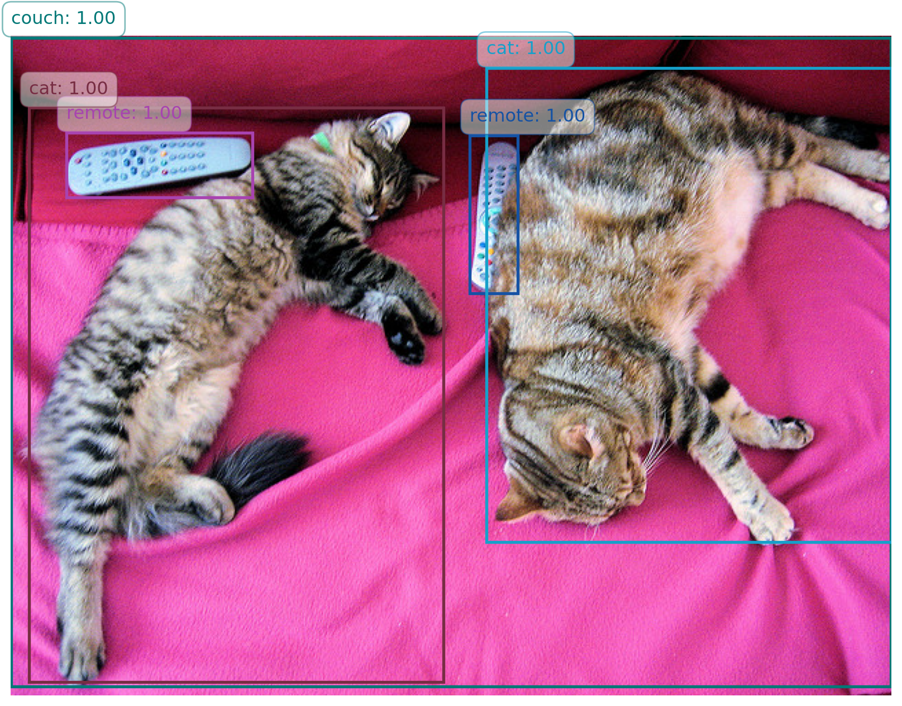

from transformers import pipelinequestion_answerer = pipeline('question-answering', device = device)result = question_answerer(question="What is the capital of France?", context="The capital of France is Paris.")pprint(result)
from transformers import pipelinegenerator = pipeline('text-generation', device = device)result = generator("Once upon a time", max_length=50)pprint(result)
[{'generated_text': 'Once upon a time her vision suddenly became clear and so '
'did her ears and she could clearly hear it on the bright '
'plains of the Himalayas. This image was known '
"as'shambhala' – 'Shambhala is the ocean"}]
20.3.5 翻译 (translation)
用于将文本从一种语言翻译成另一种语言。
from transformers import pipelinetranslator = pipeline('translation_en_to_fr', device = device)result = translator("Hello, how are you?")pprint(result)
from transformers import pipelinesummarizer = pipeline('summarization', device = device)result = summarizer("Hugging Face is creating a tool that democratizes AI. The library will support various tasks and models.")pprint(result)
[{'summary_text': ' Hugging Face is creating a tool that democratizes AI . The '
'library will support various tasks and models . Hugging '
'face is creating an AI tool that can be used to help people '
'learn more about AI . It will be available in the U.S. for '
'free .'}]
20.4 运行机制
使用 Hugging Face 的 pipeline 运行任务时，任务默认是在本地执行的。
当你使用 pipeline 函数时，它会加载一个预训练的模型（可以是 Hugging Face Hub 上的模型，也可以是你本地的模型），然后在你的本地机器上执行推理任务。这意味着所有计算都是在你的本地计算机上进行的，而不是在 Hugging Face 的服务器上进行的。
不过，pipeline 也可以访问在线的模型存储库。如果你指定了一个在线模型（例如 Hugging Face Hub 上的某个模型），那么 pipeline 会先从在线存储库下载模型到本地，然后在本地运行推理任务。因此，即使你访问的是在线模型，执行过程仍然是在本地完成的。
本地运行推理，可以很方便的执行批处理任务。
from transformers import pipelineclassifier = pipeline("sentiment-analysis", device=device)results = classifier(["We are very happy to show you the 🤗 Transformers library.", "We hope you don't hate it."])for result in results:print(f"label: {result['label']}, with score: {round(result['score'], 4)}")
label: POSITIVE, with score: 0.9998
label: NEGATIVE, with score: 0.5309
oracle = pipeline("zero-shot-classification", model="facebook/bart-large-mnli", device=device)oracle("I have a problem with my iphone that needs to be resolved asap!!", candidate_labels=["urgent", "not urgent", "phone", "tablet", "computer"],)
{'sequence': 'I have a problem with my iphone that needs to be resolved asap!!',
'labels': ['urgent', 'phone', 'computer', 'not urgent', 'tablet'],
'scores': [0.503635823726654,
0.47879907488822937,
0.012600619345903397,
0.002655782038345933,
0.002308761700987816]}
oracle("I have a problem with my iphone that needs to be resolved asap!!", candidate_labels=["english", "german"],)
{'sequence': 'I have a problem with my iphone that needs to be resolved asap!!',
'labels': ['english', 'german'],
'scores': [0.8135169744491577, 0.18648304045200348]}
整个流程以及本地模型的安装和运行情况：
模型下载：
当你指定 model="facebook/bart-large-mnli" 时，Hugging Face 的 transformers 库会从 Hugging Face Hub 下载这个预训练模型（facebook/bart-large-mnli）。
from transformers import AutoModelWithLMHead,AutoTokenizer,pipelinemode_name ='liam168/trans-opus-mt-en-zh'model = AutoModelWithLMHead.from_pretrained(mode_name)tokenizer = AutoTokenizer.from_pretrained(mode_name)translation = pipeline("translation_en_to_zh", model=model, tokenizer=tokenizer, device=device)translation('This is a introduction to Huggingface.')
[{'translation_text': '这是"抱起脸"的引言'}]
让我们逐行解释代码的含义：
from transformers import AutoModelWithLMHead, AutoTokenizer, pipeline
# Use a pipeline as a high-level helperfrom transformers import pipeline# 加载对象检测流程object_detector = pipeline("object-detection", model="facebook/detr-resnet-50", device=device)# 执行对象检测detection_results = object_detector(image)pprint(detection_results)
import matplotlib.pyplot as pltfrom PIL import Imageimport numpy as npimport matplotlib.patches as patchesdef random_color():"""Generate a random color."""return np.random.rand(3,)# Create a figure and axis for plottingfig, ax = plt.subplots(1, 1, figsize=(12, 8))# Display the original imageax.imshow(image)# Overlay bounding boxes and labels with random colorsfor result in detection_results: score = result['score'] label = result['label'] box = result['box']# Generate a random color color = random_color()# Draw bounding box rect = patches.Rectangle( (box['xmin'], box['ymin']), box['xmax'] - box['xmin'], box['ymax'] - box['ymin'], linewidth=2, edgecolor=color, facecolor='none' ) ax.add_patch(rect)# Draw label and score with the same color as the rectangle label_text =f"{label}: {score:.2f}" ax.text( box['xmin'], box['ymin'] -10, label_text, color=color, fontsize=12, bbox=dict(facecolor='white', alpha=0.5, edgecolor=color, boxstyle='round,pad=0.5') )# Hide axisplt.axis('off')# Show the plot with bounding boxes and labelsplt.show()

下面是对第二种调用方式结果处理的方法。
# 绘制结果fig, ax = plt.subplots(1, figsize=(10, 6))ax.imshow(image) # image 需要是检测的原始图像for score, label, box inzip(results["scores"], results["labels"], results["boxes"]): box = [round(i, 2) for i in box.tolist()] x, y, w, h = box rect = patches.Rectangle((x, y), w - x, h - y, linewidth=2, edgecolor='r', facecolor='none') ax.add_patch(rect) ax.text(x, y -5, f"{model.config.id2label[label.item()]}: {round(score.item(), 3)}", fontsize=12, color='white', bbox=dict(facecolor='red', alpha=0.5))plt.axis("off")plt.show()